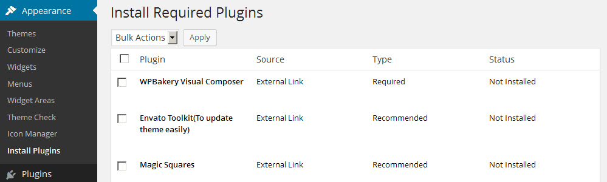

Thank you for purchasing the JustShop theme.
Steps to get help
- Please check for the solution in appropriate page on This document, if not found please check on FAQ page on bottom of this page.
- Please check online version of this document here, there are chances I have updated it after you downloaded the theme.
- Please browse/search here for more how-to: http://templatation.freshdesk.com/support/solutions/133846
- Email me from my profile page: http://themeforest.net/user/Templatation?ref=templatation#contact If your purchase is valid I will reply within few hours.
- Please do visit Support & Solutions and Announcements from the buttons above.
Thanks so much!
Best Practice to customize theme
Few style changes: If you only want to do few style changes, I suggest you to use Custom Css box in Theme Options > General > Display > Custom Css. (this will override all other styles and it saves in database so it stays even if you update the theme)
Heavy style modifications: If you want to do heavy style modifications, I suggest you to find custom-sample.css file in the THEME, rename this file to custom.css and enter styles inside it. Why this way? Because, this file is loaded in the end so the styles you put here will override the previous styles.
Heavy customization: In case you are a developer and want to do heavy customization, I suggest you use blank child theme (Find it in Resources/js-child) for your customization so that you will not loose your changes when new version arrives.
This documentation is your guide to setting up the theme, configure basic options and getting up and running with a functional WordPress site/blog/estore. I urge you to please go through this thoroughly so you can avoid potential future problems or any incorrect configuration settings.
At this point you should have WordPress already installed and now ready to setup/configure Justshop theme. I highly recommend you to please also install WooCommerce plugin (if you want shop functionality on your website) and Revolution Slider plugin for JustShop theme to work correctly
(See Woocommerce plugin installation/setup).
IMPORTANT, PLEASE READ BEFORE CONTINUING : From version 5.0 JustShop now has feature of Auto import of any of demo websites. There are 3 simple steps to import demo sites as-is. As soon as you activate the theme you will be forwarded to the page with more details which looks like below.
Above process is technical and might not work on all servers depending on their technical setups. Please follow above steps first and check if your website frontend has been setup as the demo you desired. If yes, you can skip all installation instructions below and move to Main Setups link from top menu of this page.
All instructions below are old, and are here only if the auto demo import does not work given the hosting problems for some customers.
If auto import didnt work well, and you want to setup things manually, below are the steps. To avoid setup problems, please follow the steps in the order they are written.
Quick list of Installation steps explained below
Please note that it is important you follow these steps in the order they are written to avoid any problems with settings.
-
Install Woocommerce plugin
-
Install Justshop theme
-
Install Recommended Plugins
-
Import Theme-Options backup file (.Json)
These are the essential steps to install Justshop theme, however if you want to imitate demo website, that is explained as well here.
Zip Contents
Listed below are contents of your downloaded zip archive from themeforest.net
Folder Structure (Subject to Change anytime)
Two Ways
There are two simple ways to install Justshop Theme
A) Using WordPress admin dashboard.
-
Login to WordPress admin, go to Appearance -> Themes.
-
Click on 'Add New' on top.
-
Click 'Upload' and click 'Choose File' button.
-
Select the correct justshop.zip (please refer to folder structure of your downloaded zip file) (Note: Please do not upload the whole zip archive you had downloaded!)
-
Click 'Install Now' and wait for the success message.
-
Hover your cursor over theme's thumbnail and you can see a blue button to Activate it.
-
You will be taken to Theme Options page.
At this point Justshop theme is activated and ready to be customized.
-
Now, if you want your site to look like demo site, go to Theme-Options -> Backup settings. Read the Import Settings info.
-
Click 'Upload File and Import' button choose the file 'Justshop-backup.json' which is found in <main-download>/Resources/import-data folder of your download (This .json file contains default Theme-Options settings which apply to your site's Theme-Options automatically, so that you can immediately start working with your own content without spending too much time to customize in Theme-Options.) However, you may need to put in your own logo though.
-
You will see "Settings successfully imported. | Return to Theme Options"
-
You must go to 'Theme Options' and click 'Save Settings' again.
(Note: If you see a "missing stylesheet" problem, you are uploading the wrong zip file. Please unzip the package you downloaded from themeforest and upload justshop.zip (approx. 11MB)
B) Using FTP manual upload (Skip this step if you have done steps just above this section)
-
First, unzip the downloaded zip archive you have received from Themeforest.net on your computer.
-
Look for justshop.zip file inside it and extract that folder separately onto your computer. (Note: this is the folder which actually contains all required theme files.)
-
Open a FTP manager of your choice (e.g. Filezilla or CuteFTP)
-
Navigate to your webserver's path where wordpress is installed and go inside /wp-content/themes.
-
Unzip justshop.zip and upload the whole justshop 'folder' here directly.
-
After successful completion of the folder's upload, go to WordPress admin dashboard and click on Appearance > Themes. You should now see 'Justshop' theme listed and its thumbnail preview.
-
Click on 'Activate' and then you'll be directly taken to the theme's options page.
-
Now, please follow Step 7,8,9 from A).
Plugins
Plugins/Modules Installation
Justshop theme has been built with robustness in mind. Its true that not everyone needs all the functionality provided in the theme. So, rather than having a website bloated with 100 features that you may not need, some additional features are kept separate just so that you can install and use only if you need them.
To make it easy for you, we have integrated a 1-click plugin installation module in the theme.
So, to install these 'recommended' plugins, please go to Appearance > Install Plugins page and select the ones you want.
Plugins integrated with Justshop
-
Revolution Slider (Massively popular and really cool slider plugin)
-
WPBakery Visual Composer (Drag and drop page builder plugin)
-
Envato Toolkit Plugin (Updated plugin from envato, provides 1-click updates to theme)

Tip: Documentation for plugins is included in documentation/other-documentation folder.
WooCommerce Installation
First, you should normally go to Plugins -> Click 'Add New' and put "woocommerce" in search term and follow instructions to successfully complete its installation. If you are really facing trouble, check this 1 minute video: http://www.youtube.com/watch?v=pXQbyg7eW5k
After activating WooCommerce plugin, It is recommended to skip installing WooCommerce pages because the pages already bundled with demo data xml file (see below section).
This way we can avoid conflicts with 'slugs' and/or duplicate named pages.
Demo Data
How to install demo data
Please go through these steps:
-
Go to Tools > Import.
-
Before clicking on 'WordPress' you might see a popup here to install the wordpress importer plugin, so please install it.
-
Choose the demo data XML file content.xml' found in your downloaded zip archive '...Resources/import-data'
-
Click 'Upload File and Import' button.
-
Upon successful upload, you will next be asked to 'Assign Authors'. You can choose or leave it untouched.
-
Select checkbox on for 'Download and import file attachments' and hit Submit.
-
Wait... if you see some failed messages, absolutely no need to worry about them. What matters is you should see on bottom of the page "All done. Have fun!" :-)
Note: At this stage, you will not see homepage like demo website as of now, it is explained here.
Click here for more support/solutions
Menu
If importing went successful, you will see menu already. To Setup menu as per your need, please go through these steps:
-
Go to Appearance > Menus.
-
In Manage Locations tab, you can choose the menu from dropdown list for Primary Menu.
-
If you are not seeing certain block on left side, for example Product Categories, please click on "Screen Options" on top right corner and select its checkbox and reload the page.
-
Always hit "Save Menu" if you are satisfactorily done modifying the menu.
If you already have imported
demo data xml file, then you can see a pre-built imported menu.
Megamenu
Go to Appearance > Menus and click on Screen Options tab on top right of your screen. Under 'Show advanced menu properties' click checkbox on for 'CSS Classes'.
Determine the top level menu item (example: Elements) which serves as the main one.
Dropdown the menu item arrow and add the text megamenu in the metabox of 'CSS Classes (optional)'
Now, when you add 2nd level sub-menu item (example: Content) under the above one, you have to add the text heading in CSS Classes (optional).
Menu Icons
Inserting icons in menu items
We have neatly integrated FontAwesome Icons into Justshop theme. You can use them almost anywhere in theme. A fine example to see them in action is in the menu items. Just hover your cursor over the 'Elements' menu item in demo site.
-
First open the FontAwesome cheatsheet page so you can choose which icons you want to use.
-
Copy its code. Example: "fa-gift" or "fa-cutlery"
-
Go to your menu item, dropdown its arrow and paste the code in 'CSS Classes (optional)'
-
That's it.
Homepage
Here we see how to setup homepage exactly like seen in demo website. The blocks of homepage can be enabled/disabled by going to Theme-Options > Homepage > Homepage Setup. Any particular block can also be further controlled with your own choice of settings.
Please note there is also a new widget area called 'Homepage' in the Appearance > Widgets. When you place widgets in this section, it replaces "Product Category" section of homepage (i.e. the first row of three image thumbnails below the slider).
Steps to Create homepage
-
Homepage is just a page with a custom page template having "Custom Homepage". So, first step is go to Pages > Add New and create a page. Select Page template as "Custom Homepage"
If you have imported
demo data xml file, then a page called Homepage should already be present.
-
Go to Settings > Reading and choose 'A static page' > Front Page: Homepage.
We are applying this step to act that page as a the main homepage of the site.
-
Done. Now on homepage you will see newly created homepage with home page blocks.
Note: By default, the content area is turned off for the above mentioned homepage, but did you know... you can also activate your custom content in it? The content you enter in the page template editor box will appear on bottom of homepage.
Widescreen mode
Widescreen mode allows you to have a fluid layout. Justshop theme by default has ‘boxed’ layout having 1000px fixed width but enabling Widescreen mode allows you to have a fluid layout. Main container with white background (which has the headline “Full/Boxed width”) will flow horizontally to as much full width available.
But nevertheless, your content will still be inside 1000px width visible expanding (or contracting) accordingly on all devices.
Widescreen Mode: ON
Widescreen Mode: OFF
If you find this confusing, just get in touch here for quick solutions
Logo Setup
Setting up your logo (image or text)
Here you can choose to have either a Custom Logo (image) or Text Title in header.
Go to Theme Options > Quick Start and choose only one.
Custom Logo: For this, you have to upload or insert the image path to display logo. Click 'Upload' button and select your logo jpeg/jpg/png (.gif is not recommended)
Text Title: Allows you to enable text-based site title and tagline. You can adjust and choose its font's size, color, etc. for site's title, description. You can also use widely available and popular Google Fonts from there.
Note: If your logo looks misplaced, you can set its positioning by putting values in Logo Offset found just below Custom Logo field. Also, please remember the Site Title and Tagline comes from wp-admin Settings > General
Hit 'Save All Changes' when you are satisfied.
Headers
Choosing between 6 different Headers
You have a choice to apply any one of the 6 different Header layouts provided in this theme. You can choose only one from Theme-Options > Layout (Sidebar / Header) > Header Layout.
For a quick look, checkout the header options here: default
Headline Area
How to use the Headline Area
You can apply common settings to display custom headline content and you can also customize them for individual pages/posts.
There are some settings which you can use to further customize headline area for Pages/Posts:
-
Disable headline area from this page: If disabled the headline area will not appear on this post/page. The settings will not make any difference if this is globally disabled from Theme-Options panel. If disabled, breadcrumb will be shown on headline area instead.
-
Heading Title: Enter the headline which appears on the top in headline area as heading. Leave blank to show default that has been entered in Theme-Options.
-
Headline text: This text appears in headline area below heading. Leave blank to show default that has been entered in Theme-Options. (If you don't want any headline subtext particularly for this page, enter blank space.)
-
Hero/Slider Area Content: This content appears on the header area, you can use it to place slider particular for this page/post/product or any other image or content. Shortcodes allowed. e.g. [rev_slider portfolio-slider]
To apply global settings, go to Theme-Options > Slider & Headline > Headline Options.
If you have imported demo site
theme-options .json file, then Show Headline Section Globally and Enable Default Headline Title and Message aer already checked
on by default as you can see some pre-filled Headline and Message from the images above
Portfolio
Setting up Portfolio/Cakes page comprises 2 parts.
-
Part A: Create Portfolio/Cakes Items.
-
Part B: Create a page to show those Portfolio/Cakes Items.
Part A: create items
Go to Cakes/Portfolio > Add New to create your own entries. It is best recommended to create new items instead of re-editing the pre-built ones already there.
Part B: setup page
Create a page first and choose 'Portfolio (or Cakes)' as its name. (You can of course give it your own name).
Then choose your required 'Page Template' from the choices given below. See these options under Page Attributes > 'Template'.
-
Portfolio One col
-
Portfolio Two col
-
Portfolio Three col
As you can see, the only difference in between these portfolio page templates are sizes of columns on a single row.
Once you finish setting up page (Part B), it will list all the Portfolio/Cakes items from Part A with their categories as headings which when clicked, sorts the items nicely.
Testimonials
Go to Testimonials > Add New and add your entries there for each of your item. If you have imported demo data xml file, then you can already see a few samples we have there. You can easily edit them.
On the testimonial editor page, you will find options
-
To enter Gravatar email address (If you enter this, thumbnail for this client will be fetched from his gravatar, if not, you can upload a custom thumbnail from Featured image section just on right side of this Gravatar field)
-
Byline (Post of the client ie: CEO of Blah, blah..)
-
URL (URL of clients site).
You can use a widget called JS-testimonials to show them on front-end. In case you need, there is a shortcode too for testimonials that you can use on any post/page.
Testimonials Shortcodes
You can use this shortcode in any post/page/custom post type or in a sidebar text widget or as a template tag.
Basic usage:
[templatation_testimonials]
An example:
[templatation_testimonials limit="10" size="100"]
Parameters for Testimonial Shortcode available are:
-
'limit' => 5 (the maximum number of items to display)
-
'per_row' => 3 (when creating rows, how many items display in a single row?)
-
'orderby' => 'menu_order' (how to order the items - accepts all default WordPress ordering options)
-
'order' => 'DESC' (the order direction)
-
'id' => 0 (display a specific item)
-
'display_author' => true (whether or not to display the author information)
-
'display_avatar' => true (whether or not to display the author avatar)
-
'display_url' => true (whether or not to display the URL information)
-
'echo' => true (whether to display or return the data - useful with the template tag)
-
'size' => 50 (the pixel dimensions of the image)
-
'title' => '' (an optional title)
-
'before' => '<div class="widget widget_woothemes_testimonials">' (the starting HTML, wrapping the testimonials)
-
'after' => '</div>' (the ending HTML, wrapping the testimonials)
-
'before_title' => '<h2>' (the starting HTML, wrapping the title)
-
'after_title' => '</h2>' (the ending HTML, wrapping the title)
-
'category' => 0 (the ID/slug of the category to filter by)
The various options for the "orderby" parameter are:
-
'none'
-
'ID'
-
'title'
-
'date'
-
'menu_order'
To use in template files (usage in .php files):
<?php do_action( 'templatation_testimonials' ); ?>
Sidebars
Managing custom sidebars
This section explains how to put widgets in different sidebars to show in different pages.
If you do not need different sidebars/widgets, please skip this section.
I kept JustShop Theme compatible with WooSidebar plugin instead of implementing this feature in theme itself. Why? Mainly because most users may not need different sidebars on different pages, but if you really want, you can do it easily using this plugin.
Install woosidebar plugin. Easy way to install: Go to Plugins > Add New, search for "woosidebar" and install the 1st plugin that comes in list.
Logic of WooSidebar Plugin: This plugin creates a separate sidebar for a condition that you provide. Widgets placed in 'Primary Sidebar' can be shown only for Contact Us page. This new sidebar would create another widget area and it will replace Primary Sidebar in contactus page.
Step to create new widget area: Go to Appearance > Widget Areas > Add New.
For e.g. if you create a new widget area called "Sidebar For Shopping Pages" and choose to only show widgets for Pages, then you can do so (and this sidebar will not show up in posts/products etc). Then it is available to drag n' drop widgets in it.
See an example: on this page
Creating a custom Sidebar
For woosidebar official help, please read this: http://docs.woothemes.com/document/woosidebars-2/
Further, a 10 minutes video explains everything from start to finish about custom sidebars.
http://www.bobwp.com/woosidebars-plugin-customized-sidebars-for-your-blog-or-website/
Footer
Here you will find settings to fully customize footer widgets
You have choice to display default, 1, 2, 3, 4 columns in footer widgets. Based on the columns you select in Theme-Options > Footer Customization.

You will see Widget areas generated in the Appearance > Widgets.
To activate footer widgets, go to Appearance > Widgets and just drag n' drop in the areas provided.
Click here for more support/solutions
Revolution Slider
I have used and included Revolution slider http://codecanyon.net/item/slider-revolution-responsive-wordpress-plugin/2751380 (extended license was bought by me, permits you use only with this theme.) with this theme because it is very powerful and at the same time really easy to use. During the installation of theme you should have already installed Revolution Slider plugin. If you haven't, please go to Appearance -> Install plugins to install and activate it.
Documentation from plugin author is included in Documentation/other-documentation folder together this file.
Note: If you import slider settings, we urge you to please check the 'file permissions' on the folder /wp-content/plugins/revslider Normally it should be '0755 or '777'
To setup Revolution slider on homepage:
-
Create (or import) a new slider and copy the generated shortcode.
-
Paste it in Theme-Options > Slider & Headline > Slide Settings.
By default the slider will appear only on page whose Page Attribute is set as "Custom Homepage". However, you can define separate slider/Hero area for any particular page from bottom of page editor. If you want to show slider on whole website, there is an option to enable or disable that too.
For advanced users/developers: You can use any kind of data in 'Slider Area Content' metabox (in Theme-Options) and it will be shown on the slider section (Hero Area) instead.
Click here for more support/solutions
Justshop has several useful Page Templates, some of them are...
-
Archives
-
Blog
-
Contact
-
Image Gallery
-
Full Width
-
Sitemap
-
Tags
-
Timeline
-
Portfolio one col
-
Portfolio two col
-
Portfolio Three col
-
Custom Homepage (very cool!)
To use any of the above mentioned page template, just create page from Pages > Add New and select the template of your choice from Page Attributes section.
Page Builder
How to use Visual Composer Page Builder
Go to Settings > Visual Composer. (Changing default settings is not recommended).
When you create any post or page, you can see the blue button "Visual Composer" to activate it.
You will see options to start building (or composing) content and layout for your post/page.
Surely, you can be as creative as you want and build your page having a unique layout for itself. If you want to reuse a certain layout you have created, then you can use the "Templates" button to save your layout for future use. You can test drive Visual Composer Interface yourself.
If you have imported
demo data xml file, then you already get several pre-built pages created using Visual Composer.
Creating a Menucard
Menucard can be useful to showcase your own items and their prices on the fly. Menucard has been kept separate from core products so that you can set their prices, order, names as per your requirements.
If you have imported
demo data xml file, then there is a pre-built Menucard page already created for you.
To create a menu card:
Go to Wp-admin > Menu Cards > Add New and enter Title, Description, Price and Featured image for the item.
Assign a particular Item into a "Cards" Taxonomy. Remember, cards here act exactly like Categories do for Posts.

Please be careful and cautious when creating taxonomies for Menucards because it could possible break naming structure if there is a 'same name' clash with Posts' or Products' Categories.
Use the menucards shortcode as described below.
General Shortcode for displaying menucard.
[rmc-menu menu="14,17" heading="no" thumblink="image" titlelink="post" look="classic" layout="2col"]
The parameters explaination:
-
menu - accepts a list of menu card separated IDs. You can determine a menu card's ID at Menu → Cards, by rolling over a menu card link and looking at the number after "tag_ID=" in the browser status bar.
-
heading - accepts "yes" or "no".
-
thumblink - accepts "image" (links the thumb to the large version of the image), "post" (links to the single post page) and "none" (no link at all).
-
titlelink - accepts "image" (links the thumb to the large version of the image), "post" (links to the single post page) and "none" (no link at all).
-
layout - accepts "1col", "2col", "3col" and "4col".
-
look - accepts "classic", "list", "box", "grid" and "light".
You can also use the shortcode generator by clicking Insert Menu Shortcode button in the page editor (i.e. one which has 'open book' icon).
Detailed documentation for Menucards is available in <main-download-folder>/Documentation/other-documentation/menu-card documentation
Shortcodes
Justshop theme comes with a visual composer plugin. All shortcodes of JustShop theme have now been implemented in visual composer itself as a component so that you can use them with visual interface. Please see below section for more details.
VC Shortcodes
How to use Visual Composer Shortcodes
We will shortly list this section which I am sure you will all love and find great use for
Click here for more support/solutions
WooCommerce is a WordPress eCommerce toolkit that helps you sell products/items on your website. It transforms your WordPress website into an eCommerce store for free. However, please make sure that your hosting package is capable of running it (know more here). If you have trouble configuring WooCommerce, please check official documentation here: http://docs.woothemes.com/document/configuring-woocommerce-settings/
If you have already imported xml
demo data file, then you can skip installing WooCommerce pages which it prompts you to, because they are already bundled with demo data.
Setup Base Pages
Setting up Shop Page: Go to WooCommerce > Settings > Products (tab) and choose choose from dropdown list: Shop Page.
Setting up Checkout Pages:Go to WooCommerce > Settings > Checkout (tab) and choose from dropdown list: Cart Page, Checkout Page and Terms & Conditions page.
Setting up My Account Page: Go to WooCommerce > Settings > Accounts (tab) and choose from dropdown list: My Account Page.
To read more about setting up products with variations, different attributes or variable pricing, please check these useful links:
Setup Product Image Sizes
WooCommerce > Settings > Products
On bottom of this page, please make sure Catalog Images and Product Thumbnails have image sizes setup as:
-
Catalog - 280px width and 180px height,
-
Single Product - 350px width and 350px height,
-
Product Thumbnail - 80px width and 80px height
To know how to add product images and gallery, please checkout official documentation here: http://docs.woothemes.com/document/adding-product-images-and-galleries/
Using Magnifier
This turns on zoom-in for the product's image on its details page. Go to WooCommerce > Settings > Magnifier and turn it on/off upon your choice of requirements. If you disable it, clicking on product thumbnail images will open their images as a separate image in a popup box (or a new window).
Ajax Nav
Your users deserve a rich user experience and the JS WooCommerce Ajax Navigation Widget serves as a drag n' drop friendly navigation which helps your customers to find the products they’re looking for more easily. We have integrated it right inside Justshop theme. With a few quick steps you will be able to get most use out of it very easily. This widget only works if you have the main WooCommerce plugin already installed and active and also Product Attributes applied to your products.
Also note, for WooCommerce Ajax Navigation Widget to work (i.e. display in sidebar) you need to create 'Attributes'.
So, please add Attributes first.
Further recommended reading (official links):
After you have applied variations and attributes, go to Appearance > Widgets and drag and drop JS WooCommerce Ajax Navigation Widget into your desired widget area.
Tip: If you really want to change the style of Colors and Labels, you need to copy css rules from assets/css/frontend.css and paste them in Theme Options > General Settings > Display Options > Custom CSS.
Wishlist
We have added compatibility with "Add to Wishlist" plugin by YITH
Click here for more support/solutions
Here is brief introduction to theme options panel for easy reference.
General Settings: This section provides interface for settings like Logo image (or text title), favicon, Breadcrumb, Custom css, Retina-ready graphics, Widescreen mode, Sticky Menu, Google Analytics code, Responsiveness, and a lot more.
Styling: Here you can apply background colors and images and also have your choice of colors to links, buttons, etc.
Typography: Change fonts or its font-family, font-size, color etc. It is advisable not to use too many different fonts because it makes your websit load its pages slower (i.e. using too many fonts hampers SEO benefits)
Layout (Sidebar/Header): Here, you can choose which type of layout you want (i.e. Left sidebar or Right sidebar). Also, choose from one of the 5 header layouts provided from here.
Slider & Headline: Enable or disable slider for homepage or apply it all throughout the site. Globally control settings for the Headline/Hero area. Apply main USP line or message, etc.
Homepage: This tab setting has 5 sections which help in arranging and customizing the homepage layout with the content you choose to display. Sections are like: 'Product Categories', 'Featured Products', 'About Us', 'Testimonials' and 'Content area'. Most of the setting have easy short descriptions for your to understand and follow.
Portfolio/Cakes: You can choose to select and display any portfolio gallery you have created if you want it to be 'featured'. Additional settings provide option to link the portfolio item to its 'lightbox' image or its own link.
WooCommerce: This tab has sections to generally choose how many products to show, enable or diable Catalog mode, show cart icon in header or also enable/disable infinite scroll when visitor browses Shop page. You need WooCommerce plugin installed and active and also a few products for this to take effect.
Footer Customization: All widgets for footer in theme can be configured and options to choose how many footer widget areas to show or customize its text to display in (left or right) side of footer. There is also a sub-section called 'Extreme footer content' to customize copyright text, etc.
Subscribe and Connect: Here you can add your social networks sharing urls and also enable Feedburner ID for the e-mail subscription form. If you want to enable 'Subscribe and Connect' on single post, there is option to choose that too and more. You also have option to enable or diable showing the subscribe and RSS icon.
Contact Page: You can put in your e-mail address if you want to use 'Contact Form' page template. You can also apply Google Map coordinates and customize it to display a map on the Contact Form page template and a link to it on the Contact Us widget.
Use this site to find co-ordinates
Translations
Justshop Theme currently comes in 4 languages: English, Italian, Brazilian/Portuguese and Spanish.
Translating Justshop in other language is very easy. If it sounds too hard, see our recommendation below
Steps to Translate:
Install codestyling-localization plugin, go to Tools > Localization and find Justshop, If you do not already find your language listed, click on Add Language button.
Select your language in the popup and click "Generate .PO file" button. Click on Rescan.
When rescan is finished, click Edit and on next page you will find all the strings used in the theme.
You can write their respected translated string by clicking edit button on right side of the strings easily.
Once your are done translating strings, please click on 'Generate .mo file' button on top of same page. Its done.
This simple 2 minutes video explains how above plugin works with an example. http://www.youtube.com/watch?v=9jIc_La6C3M
For advanced users: .PO file is included with your download, you can find it in <theme-root>/lang you can translate this with your favorite .PO file editor software like Poedit and generate .mo files.
For a detailed guide to translation please visit : http://codex.wordpress.org/Translating_WordPress
Functionality Logic
Justshop theme is designed and coded to make it easy for end user. Most of things you can control from admin panel. It fits to width of available devices. Justshop normally fits to a portal/blog kind of website, but its real highlight is woocommerce/shop on the core. Trusted by 1000+ satisfied customers
Some featured highlights:
-
6 layouts of header and easy to switch from Theme Options.
-
Shop pages are styled for 2,3,4 and 5 columns so you can decide to have as many column as you want.
-
Headline feature on every page/post/product post types. Option to globally disable it or provide a global headline title and message from Theme Options > Slider & Headline settings.
Styles management:
Theme Updates
Two options to update your theme to latest version. .
We recommend you make backup of your theme/website before updating in case something goes wrong. You can use
https://wordpress.org/plugins/updraftplus/ to make it easy. Also create back of your theme settings by going to Themeoptions->Backup settings->export backup.
From WordPress admin dashboard:
-
Install Envato Toolkit plugin and activate it (by going to Appearance > Install Plugins)
-
To proceed further, you will need your Envato username and a Secret API Key (this can be found from Envato's Dashboard > My Settings > API key).
-
Press 'update automatically' and theme will be updated depending on your bandwidth speed.
Using Manual FTP method:
-
First, unzip the downloaded zip archive you have received from Themeforest.net on your computer.
-
Look for justshop.zip file inside it and extract that folder separately onto your computer. (Note: this is the folder which actually contains all required theme files.)
See the folder structure in the downloaded zip archive
-
Open a FTP manager of your choice (e.g. Filezilla or CuteFTP)
-
Navigate to your webserver's path where wordpress is installed and go inside /wp-content/themes
-
Unzip justshop.zip and upload justshop 'folder' on your server with overwriting.
-
After successful completion of the folder's upload, go to wordpress admin dashboard and click on Appearance > Themes. You should now see 'JustShop' theme;s version listed.
-
You must again go to 'Theme Options' and click 'Save All Changes' again.
Backup Theme Options
It is very easy and simple to backup your Theme Options
-
From wp-admin, go to Theme Options > Backup Settings.
-
Click on the button 'Download Export File'.
-
That's it.
Note: You can of course import the Theme's Options too as mentioned from point no. 8 onwards.
Click here for more support/solutions
Do & Don't
Recommended Dos and Don'ts
Each update fixes and improves a few things, brings in new features and adds useful stuff. So, your attention to some advisable suggestions below will let you know what you can be aware of when working with Justshop theme.
-
Backup Your Current Theme Options.
-
Backup Theme folder (i.e. download to your desktop)
-
Do not rename theme folder.
-
Reset browser cache whenever you can.
-
Check permissions of key folders in wp-content/*
Justshop theme changelog (release history)
Q: How to setup twitter?
A: Twitter has updated its API. So, now each API call should be first registered by account owner. This means, to setup twitter, please go to Theme-options > JS-twitter Setup. Please create Twitter secret key and consumer key by following on-screen instructions. Once you do that, You can click on Authorize button on same page.
This youtube video shows how to get secret key and consumer key.
Q: Where can I find more FAQ and How-to?
A: For more latest answers and updated docs, please visit solutions page :
http://templatation.freshdesk.com/support/solutions/133846
Q: Why JS- WooCommerce Ajax Navigation widget is not displaying in my sidebar?
A: In order to display the JS- WooCommerce Ajax Navigation widget, first you need to assign Product Attributes to your products. You can also directly search for soultions related to WooCommerce Ajax Navigation widget here: http://docs.woothemes.com/document/ajax-enabled-enhanced-layered-navigation/
Click here for more support/solutions